O primeiro Mortal Kombat
O primeiro Mortal Kombat é um icônico jogo de luta que foi lançado em 1992, criado por Ed Boon e John
Tobias e desenvolvido pela Midway Games (agora conhecida como NetherRealm Studios). Ele é um dos títulos mais
influentes na história dos jogos de luta e deu início a uma das franquias mais populares e duradouras do gênero.
Aqui está uma introdução ao jogo e à sua história:
Título: Mortal Kombat
Data de Lançamento: 1992
Plataformas: Arcade, posteriormente adaptado para várias consoles e sistemas de videogame.
História: O enredo do primeiro Mortal Kombat gira em torno de um torneio de luta que ocorre em um reino
misterioso conhecido como Outworld. O torneio é organizado pelo vilão Shang Tsung e é conhecido como o "Mortal
Kombat". Shang Tsung é um feiticeiro que absorve as almas de seus oponentes derrotados para manter sua juventude
e poder.
Os jogadores escolhem entre sete lutadores, cada um com suas próprias habilidades e histórias. Os personagens
incluem Liu Kang, Johnny Cage, Sonya Blade, Scorpion, Sub-Zero, Raiden e Kano. Cada personagem tem motivos
diferentes para participar do torneio, mas todos têm um objetivo em comum: derrotar Shang Tsung e evitar que ele
conquiste a Terra.
Características Marcantes:
Mortal Kombat se destacou por sua violência gráfica e "fatalities", movimentos especiais que permitiam que os
jogadores executassem finalizações brutais em seus oponentes derrotados.
O jogo também introduziu a mecânica de combate 2D, com uma jogabilidade que se diferenciava de outros jogos de
luta da época.
Mortal Kombat foi um dos primeiros jogos de luta a usar atores reais para a captura de movimentos, o que deu aos
personagens uma aparência mais realista.
A série Mortal Kombat rapidamente se tornou conhecida por seu universo de personagens, incluindo ninjas,
feiticeiros e outros seres sobrenaturais.
O sucesso do primeiro Mortal Kombat levou ao desenvolvimento de várias sequências, filmes, séries de televisão e
uma grande base de fãs em todo o mundo. A franquia ainda está ativa e continua a ser uma das mais importantes no
gênero de jogos de luta.
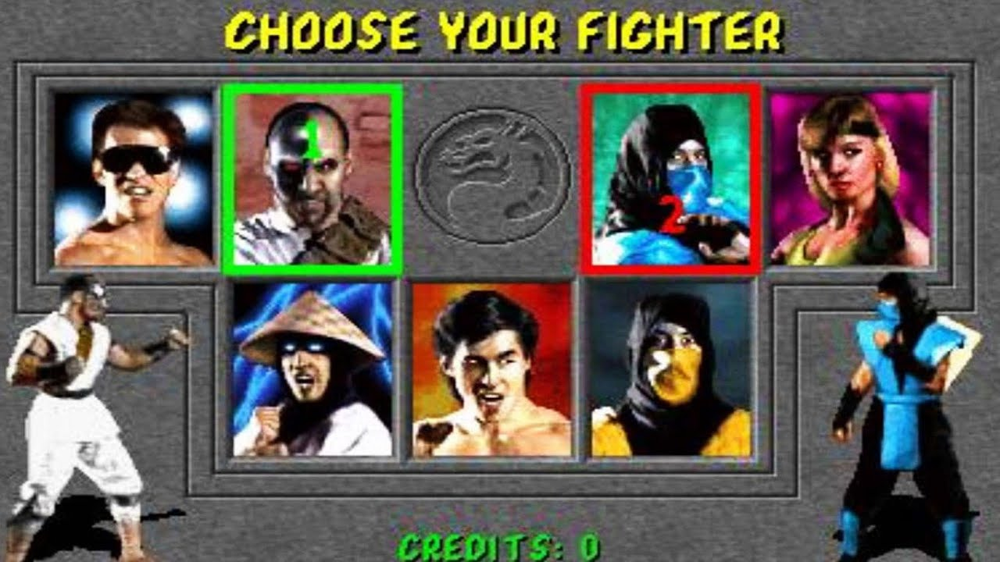 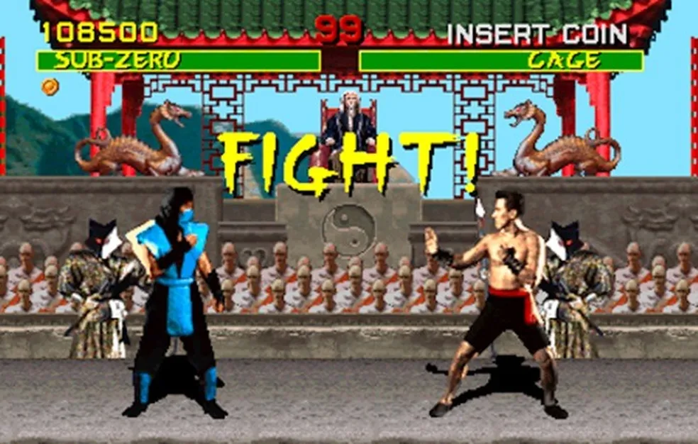 

Mortal Kombat 2
"Mortal Kombat 2," frequentemente abreviado como "MK2," é uma das sequências mais icônicas de jogos de luta na
história dos videogames. Desenvolvido pela Midway Games, foi lançado em 1993, continuando o sucesso do primeiro
jogo, "Mortal Kombat." A introdução ao "Mortal Kombat 2" pode destacar os seguintes pontos:
Violência e Gráficos Aprimorados: MK2 manteve a reputação de seu antecessor por sua violência
gráfica e movimentos especiais brutais. Os gráficos foram aprimorados, tornando as animações mais suaves e
detalhadas.
Novos Personagens: O jogo introduziu uma série de novos personagens icônicos, como Baraka, Kitana,
Mileena e Jax. Cada personagem tinha seu próprio conjunto de movimentos e Fatalities únicos.
Fases Interativas: MK2 introduziu cenários interativos, permitindo que os jogadores usassem
elementos do ambiente para lutar contra seus oponentes. Essa característica adicionou uma nova dimensão à
jogabilidade.
Mortal Kombat 3
"Mortal Kombat 3" (MK3) é a terceira entrada na icônica série de jogos de luta "Mortal Kombat".
Lançado pela Midway Games em 1995, o jogo continuou a tradição de combates brutais e ação intensa que tornou a
franquia tão popular. Aqui está uma introdução ao "Mortal Kombat 3":
Adição de Personagens Novos e Clássicos: MK3 expandiu o elenco de personagens, apresentando
lutadores novos, como Cyrax, Sektor e Kabal, juntamente com personagens familiares, incluindo Scorpion,
Sub-Zero, Raiden e outros. Cada lutador tinha seu próprio conjunto de golpes especiais e Fatalities.
Novos Golpes e Combos: O jogo introduziu novos movimentos e combos, permitindo uma jogabilidade mais
variada e estratégica. Os jogadores podiam criar sequências de ataques mais longas e elaboradas.
Gráficos Melhorados: Os gráficos foram aprimorados em relação ao jogo anterior, com personagens mais
detalhados e cenários dinâmicos. Além disso, as transições entre as fases ocorriam durante a luta, adicionando
um elemento dinâmico ao jogo.
A transição para a era 3d
A era 3D de Mortal Kombat ocorreu principalmente nos anos 2000 e marcou uma transição na série Mortal Kombat,
que anteriormente se baseava em gráficos 2D e jogabilidade. Aqui está um resumo das principais características e
jogos desta era:
Mortal Kombat 4 (1997):
Este foi o primeiro jogo da série a usar gráficos 3D e mudar
a jogabilidade
para um ambiente tridimensional. No entanto, ainda mantinha muitos elementos familiares, como fatalities e
personagens clássicos.- 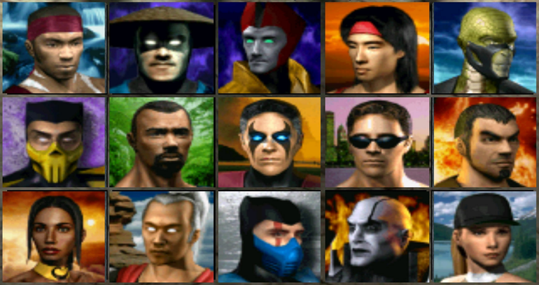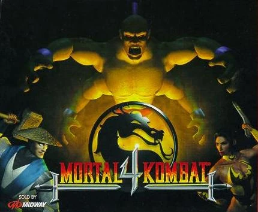
Kombat: Deadly Alliance (2002):
Este jogo introduziu um sistema de luta mais
profundo, com estilos de
luta individuais para cada personagem. Também trouxe novos personagens e uma história mais elaborada.-
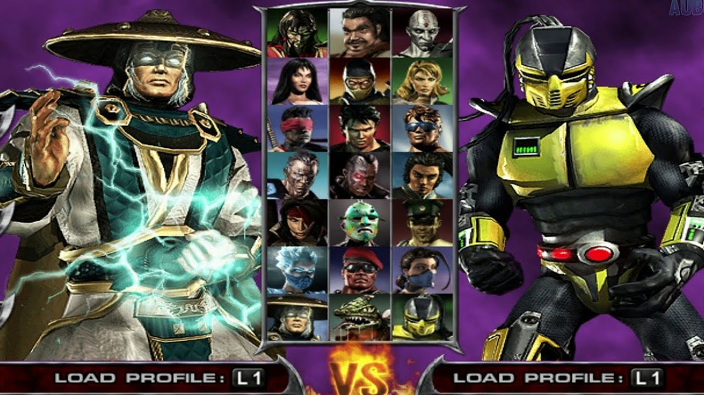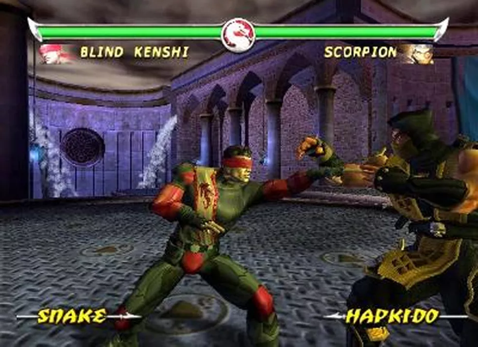
Mortal Kombat: Deception (2004):
Este título continuou a evoluir a jogabilidade,
adicionando arenas interativas e novos personagens. Além disso, apresentou o modo "Krypt" , que permitia
aos jogadores desbloquear conteúdo adicional.- 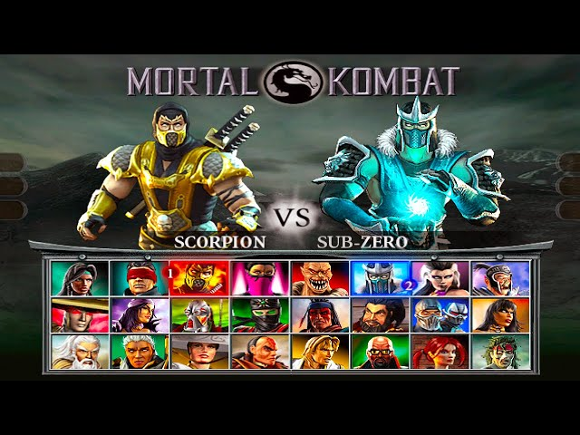
Mortal Kombat: Armageddon (2006):
Foi o último jogo da era 3D antes de uma
reinicialização da série. Apresentava uma grande quantidade de personagens jogáveis, incluindo praticamente
todos os lutadores das entradas anteriores.
- 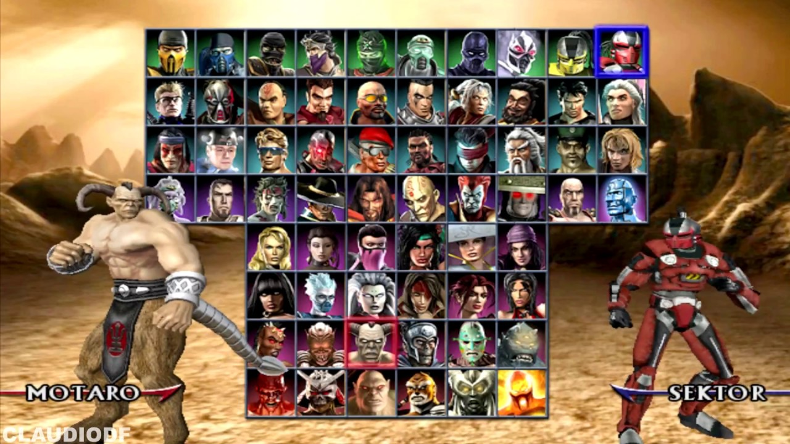
Konclusão
Embora a era 3D tenha trazido inovações na jogabilidade e nos gráficos, ela também teve altos e
baixos. Os jogadores têm opiniões variadas sobre esses jogos, com alguns apreciando as mudanças e outros
sentindo que a série perdeu parte de sua identidade original. Eventualmente, a série voltaria a suas raízes
2D com o lançamento de "Mortal Kombat" (2011), que revitalizou a franquia e levou a uma sequência de jogos
bem-sucedidos.
A terceira trilogia (atualmente)
Kombat 9 (2011):
Mortal Kombat 9 é uma reimaginação dos eventos dos três primeiros jogos da série. A história começa com
Raiden sendo atacado por Shao Kahn, o imperador de Outworld. Em uma tentativa de evitar a vitória de Shao
Kahn no torneio Mortal Kombat, Raiden envia mensagens de volta no tempo para o seu eu do passado. Isso cria
uma linha do tempo alternativa onde os personagens enfrentam versões mais jovens de si mesmos. O jogo
abrange os eventos de Mortal Kombat 1, 2 e 3, culminando na derrota de Shao Kahn.
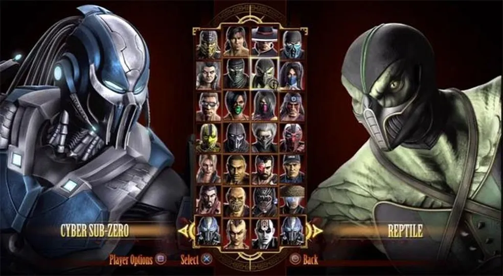
Mortal Kombat X (2015):
Mortal Kombat X ocorre 20 anos após os eventos de Mortal Kombat 9. Nessa nova linha do tempo, novos
personagens são introduzidos, e os filhos dos personagens originais desempenham papéis significativos. O
enredo gira em torno de uma guerra entre as forças do bem e do mal, com uma ameaça misteriosa chamada
"Corrupted Elder God" (Deus Ancião Corrompido) desempenhando um papel central. O jogo explora a luta de
diferentes facções em busca do controle da Terrarealm e do Outworld. No final, Raiden torna-se mais sombrio
e mais disposto a usar a força para proteger Earthrealm.
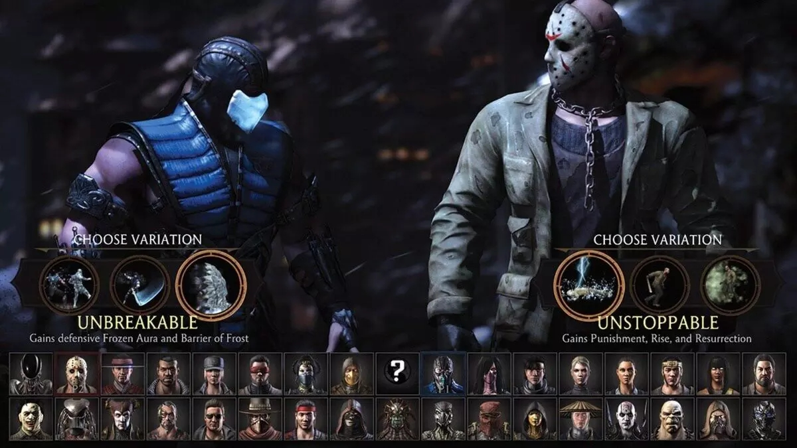
Mortal Kombat 11 (2019):
Mortal Kombat 11 continua a história da linha do tempo
alternativa iniciada em Mortal Kombat 9. Kronika, a Guardiã do Tempo, emerge como a antagonista principal,
tentando restaurar a ordem do tempo ao fundir a linha do tempo atual com eventos do passado. Isso cria
conflitos entre personagens do presente e suas versões mais jovens, resultando em alianças improváveis. O
enredo também explora o passado de Scorpion e Sub-Zero. No final, a linha do tempo é restaurada, mas com
algumas mudanças significativas.
Estas são as histórias básicas dos jogos Mortal Kombat 9, Mortal Kombat X e Mortal Kombat 11, mas cada jogo
tem seus próprios detalhes e reviravoltas na narrativa. Cada jogo da série Mortal Kombat também apresenta
uma ampla gama de personagens icônicos e lutas sangrentas, mantendo o foco na competição e na ação.
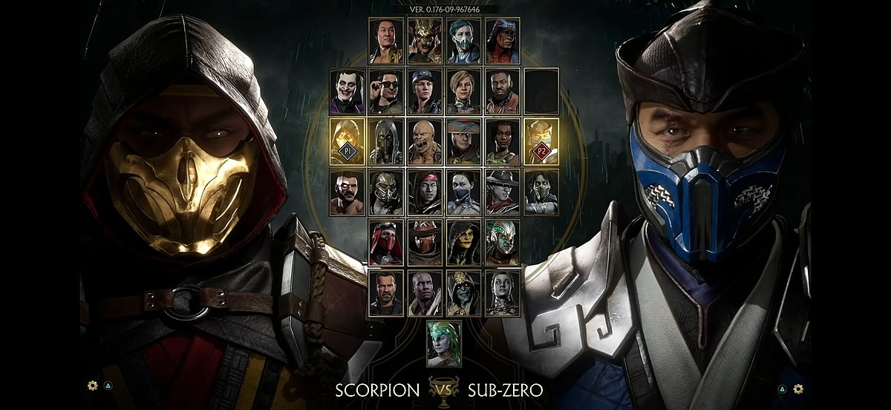
Mortal Kombat 1:
Mortal Kombat 1 é um jogo eletrônico de luta desenvolvido pela
NetherRealm Studios e publicado pela Warner Bros.. Foi lançado em 19 de setembro de 2023 para PlayStation 5,
Xbox Series X/S, Nintendo Switch e Windows. Mortal Kombat 1 é um reboot da série Mortal Kombat.
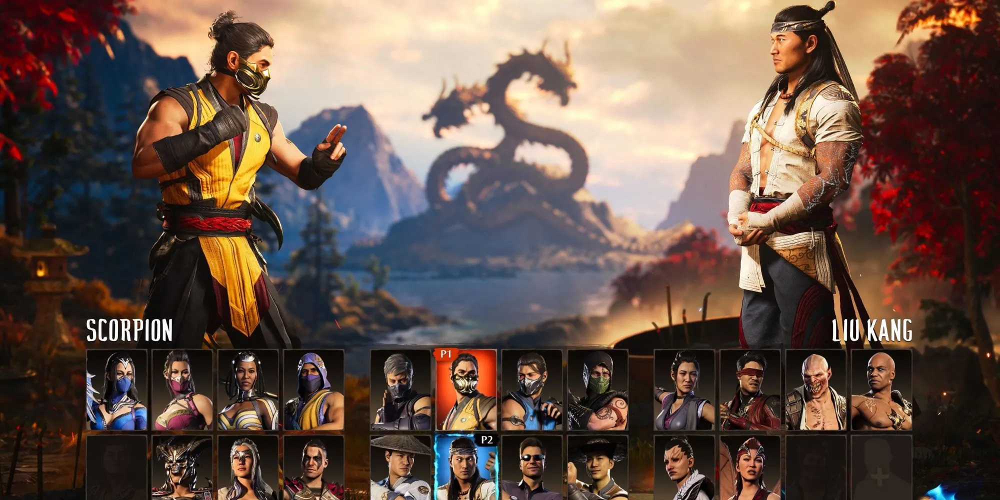